Git
van n00b naar guru
Overzicht
Git level: Easy
Voor we aan het echte werk gaan beginnen even wat basis principes van git.
Local first
Alles wat je doet, doe je lokaal. Er gaat pas iets naar de server zodra je het pushed.
Wanneer het helemaal fout is gegaan kan je altijd je lokale repository weggooien en een nieuwe clone maken.
Branches
Je kan meerdere branches hebben binnen een repository (zie GitFlow).
Het werk op branch A heeft geen impact op het werk in branch B.
Remotes
Een remote is een kopie van de repository op een centrale plaats, bijvoorbeeld GitHub of Bitbucket.
Wanneer een branch gekoppeled is aan een remote dan is het een tracked branch. Deze kan laten zien hoeveel commits je voor of achter loopt. 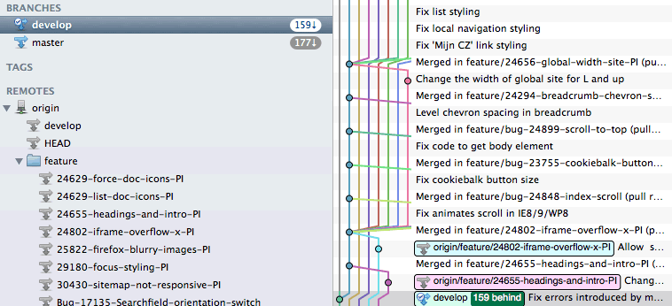
Multiple remotes
Je kan meerdere remotes hebben, deze hoeven niks met elkaar te maken te hebben.
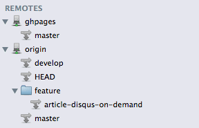Gitflow
Gitflow is een strategie die voorschrijft met welke branches je zou moeten werken.
Branch overzicht
- main, laatste productie versie
- development, alleen afgeronde features
- feature/<feature name>, feature in ontwikkeling
- release, acties die nodig zijn om een release te kunnen maken
- hotfix, bugfix op een productie versie
En nu in een prachtig plaatje

Makkelijk te gebruiken
Ondersteuning zit ingebakken in SourceTree, er is een aparte button voor.
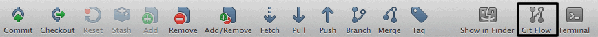Ook via de command line te gebruiken voor de echte die hards
Git level: Medium
We hebben de basis gehad, tijd voor wat moeilijkere zaken.
Samenvoegen van branches
Er zijn drie strategieen om branches samen te voegen
- Merge commit
- Fast forward merge
- Rebase
1) Merge
De veranderingen in branch B worden samengevoegd met branch A. Vaak van feature branch naar development branch.
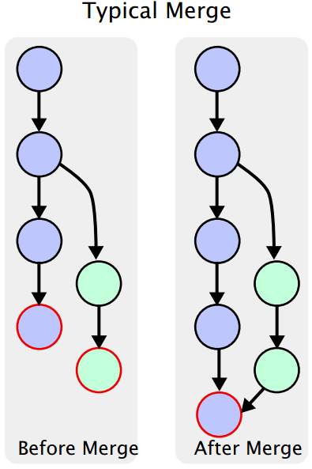Een merge blijft zichtbaar
Het mergen van 2 branches blijft voor altijd en eeuwig zichtbaar in je history.
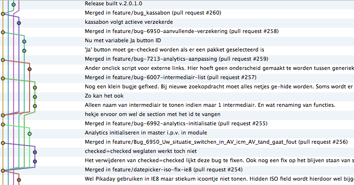Fast forward merge
Een fastforward merge kan alleen plaats vinden als er na het starten van de branch geen activiteit heeft plaatsgevonden op de bron branch.
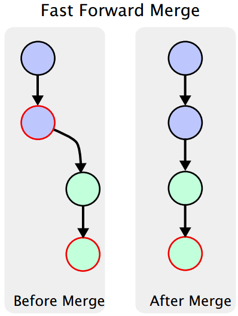Uitzetten van fast forward
Het is mogelijk om fast forward merges uit te zetten. Je zou dit kunnen doen om altijd te kunnen blijven zien wanneer er een merge heeft plaatsgevonden.
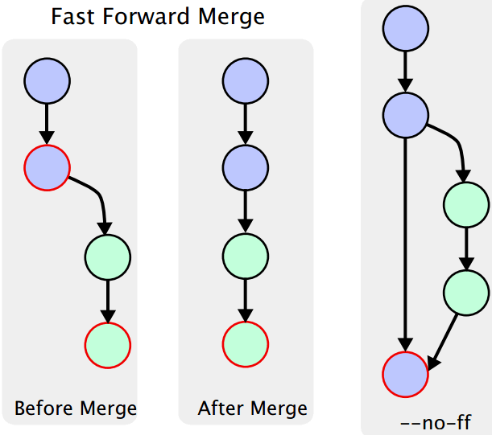Rebase
Bij een rebase worden de wijzingen van de branch teruggespeeld op de branch die over moet blijven. Bijvoorbeeld van feature branch naar development branch.
Het resultaat ziet er hetzelfde uit als een fast forward merge.
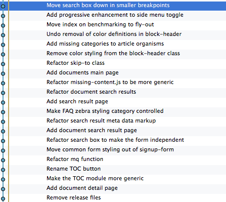Merge vs Rebase
Even side-by-side het verschil in resultaat van een merge en een rebase.
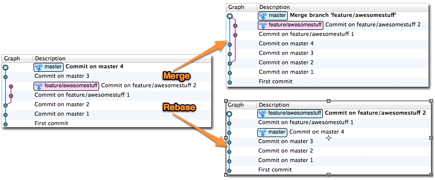Wanneer gebruik je Merge?
Gebruik merge wanneer:
- het belangrijk dat je in de history kunt zien dat een feature is toegevoegd.
- je feature branch publiek is.
Wanneer gebruik je Rebase?
Gebruik een rebase wanneer:
- je feature branch achter loopt op development en je features uit development nodig hebt.
- je branch nog niet publiek is.
- een lineare history is waar je naar streeft.
- je een kleine feature branches hebt die terug naar development gaat.
Best practices
Een paar belangrijke gewoontes op een rij, hiermee onderscheid je je van de standaard Git gebruiker.
.gitignore
Voor je de eerste commit doet in je repository zorg je voor een goede .gitignore.
Weet je niet waar je moet beginnen? gitignore.io!
Commit als een pro
- Iedere commit doet slechts 1 ding
- Als je unstaged files meerdere features omvatten dan gebruik je staging om de files per feature te commiten
-
In SourceTree kan je ook delen van een file of zelf maar een enkele regel stagen
Volg de 50/72 regel
De 50/72 regel schrijft voor hoe een goede commit message eruit moet zien.
- 50 karakters als onderwerp, geschreven in de gebiedende wijs
- Gevolgd door een lege regel
- Uitleg over de commit, met regels die maximaal 72 karakters lang zijn.
Wat maakt een goede commit message?
Leg uit wat en/of waarom je iets hebt gedaan. De werking is uit het commentaar en de code te halen.
Het schrijven van een goede commit message kost tijd.
Git level: Guru
It giet oan!
Stash
Werk dat je niet wilt weggooien maar ook niet wilt commiten kan je stashen.
Git Amend
Waar is git amend handig voor?
Het aanvullen van je laatste commit met extra files, commentaar en/of wijzigingen in de code. Dit voorkomt een extra commit in de history.
Git Amend, wanneer niet?
Niet gebruiken als je de laatste commit al naar de server hebt gepushed!
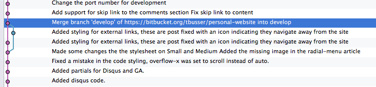Interactive rebase
Zolang de changes niet zijn gepushed naar de server kan je de history van je branch aanpassen, dit doe je met interactive rebase.
Wat kan een interactive rebase?
- Overnemen van commits (pick)
- Samenvoegen van commits (squash)
- Commit message aanpassen (reword)
- Commit aanpassen (edit)
Interactive Rebase - SourceTree
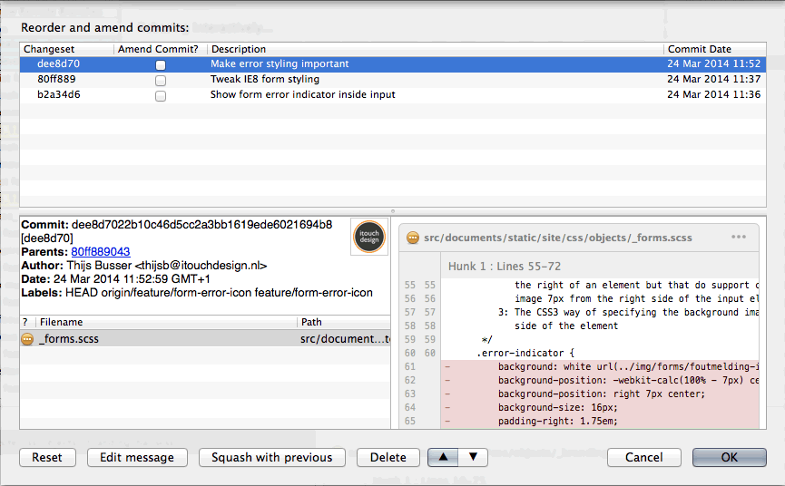Pull requests
Voordat je je werk uit de feature branch merged met de development branch kijkt er nog even iemand anders naar je werk.
Voordelen
- Een frisse blik die even kijkt of er niks raars in je code gebeurd
- Kennisdeling, degene die je code reviewt doet kennis op van jouw project
Spelregels
- Pull requests mogen niet te lang blijven liggen, het liefst dezelfde dag nog gereviewd.
- De initiator is ook degene die de merge uitvoert, merge conflicts zijn dan je eigen probleem.
- Alleen een pull request declinen als het fundamenteel fout is, anders met extra commit(s) aanpassen.
- Goede commits die een enkel doel dienen.
Clean up
Een PR kan aanpassingen behoeven, dit resulteert in extra commits.
Een interactive rebase kan dan weer zorgen voor een schone history.
Omdat je history al publiek is kan je alleen nog een force push doen, dit is levensgevaarlijk maar soms nodig.